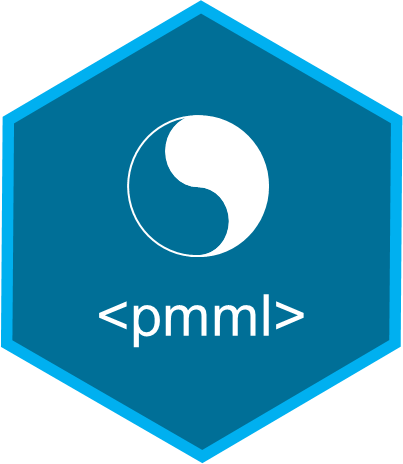

pmml 
Overview
Export various machine learning and statistical models to PMML and generate data transformations in PMML format.
For a description of the supported packages, see the vignette: Supported Packages and Additional Functions.
Example
library(pmml)
# Build an lm model
iris_lm <- lm(Sepal.Length ~ ., data=iris)
# Convert to pmml
iris_lm_pmml <- pmml(iris_lm)
# Write to file
# save_pmml(iris_lm_pmml,"iris_lm.pmml")Please note that this project is released with a Contributor Code of Conduct. By contributing to this project, you agree to abide by its terms.
These tools are provided as-is and without warranty or support. They do not constitute part of the Software AG product suite. Users are free to use, fork and modify them, subject to the license agreement. While Software AG welcomes contributions, we cannot guarantee to include every contribution in the master project.